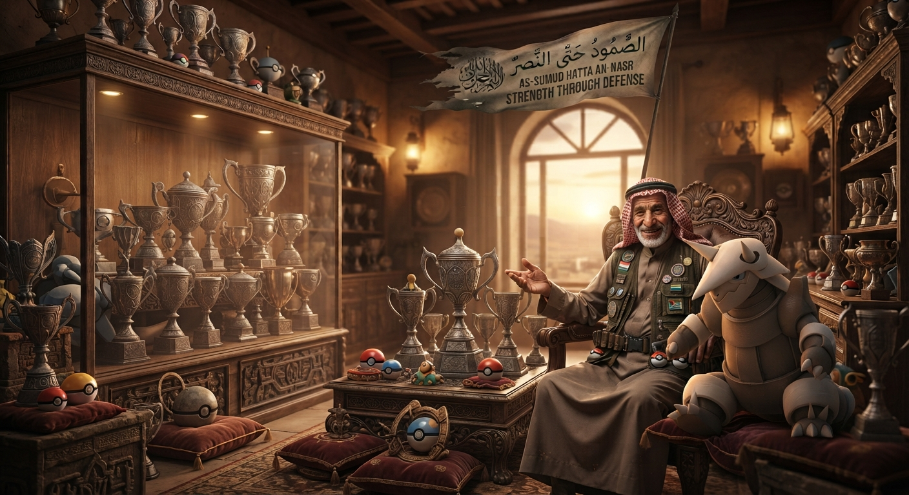

Me llaman Rashid Al-Din, aunque los muchachos de las nuevas generaciones suelen llamarme simplemente "El Viejo Muro". Setenta y cuatro años cargando arena en los zapatos y viendo pasar a entrenadores que creen que el mundo se gana corriendo más rápido.
¿Qué saben ellos de la vida? ¿Qué saben de combate? Los veo llegar a la arena con sus Charizard rugiendo, presumiendo llamaradas, o con sus Jolteon eléctricos haciendo chispas de puro nervio. Creen que la fuerza es golpear primero. Pobres ilusos. Yo me río por dentro mientras acomodo mis lentes y dejo que se estrellen contra mis muchachos de acero.

Para mí, la filosofía siempre ha sido una sola y está escrita en esa bandera ajada que mis Pokémon y yo levantamos con orgullo: As-Sumud Hatta An-Nasr. La perseverancia hasta la victoria.
Yo no juego a ver quién pega más duro. Yo juego a desgastar el alma del rival. Me fascina ver la cara de frustración de un mocoso cuando se da cuenta de que, después de diez turnos de quemarse con las púas, de morderse los nudillos contra la dureza de un Aggron o de rebotar en las murallas de un Skarmory, sus preciados trofeos caen agotados al suelo de la arena. No hay prisa. El tiempo es de quien sabe resistir. Que golpeen, que griten, que intenten quemar el desierto entero con sus chispas eléctricas. El metal no se quiebra; el metal aguanta, espera, y al final, siempre gana